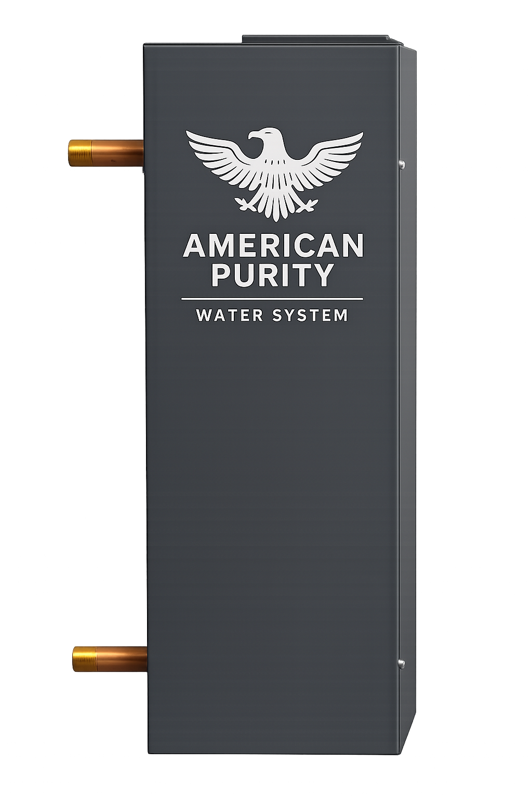
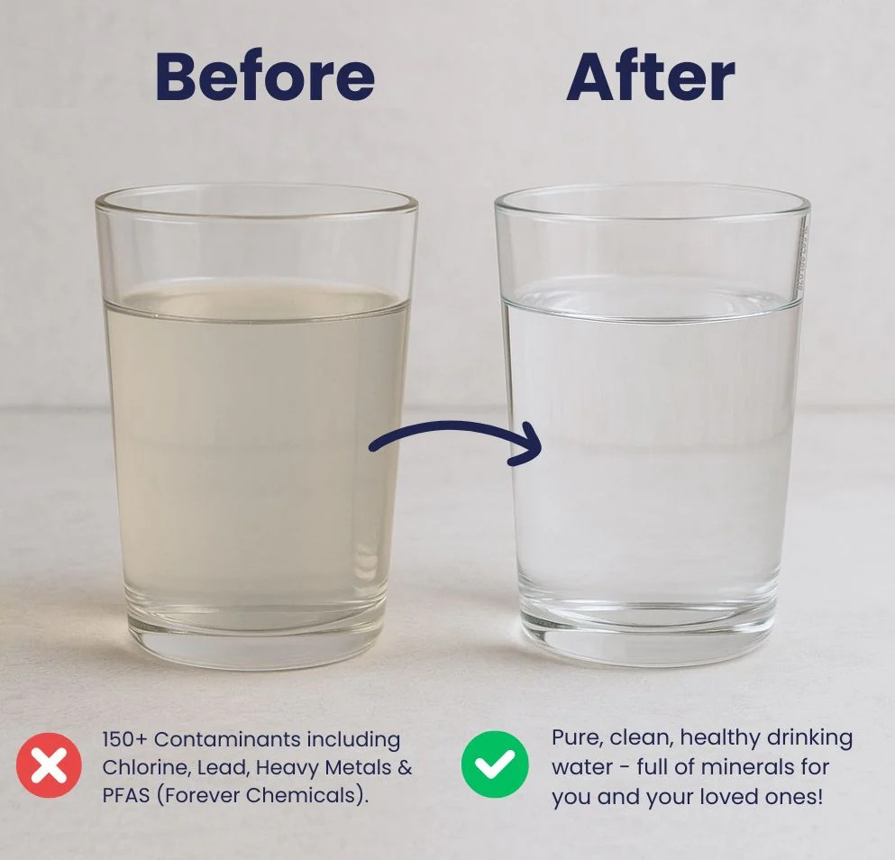

Taste, odor, atmosphere
Chlorine taste, chemical smell, sulfur odor, or water that simply doesn’t feel right.

American Purity Established 1993
A quieter standard for the water that moves through your home.
Act II The signal
At the glass. On the fixture. In the shower. In the way your home feels after the water has passed through it.
Follow the waterThe evidence
The small signals
are rarely small.
Chlorine taste, chemical smell, sulfur odor, or water that simply doesn’t feel right.
Orange, brown, or yellow staining on sinks, tubs, toilets, fixtures, and glassware.
Dry skin and hair, dull laundry, buildup, or the extra work of managing well water.
Act III The system
American Purity treats the water entering your home before it reaches the kitchen sink, shower, laundry room, and every tap in between.
Proprietary filtration architecture
American Purity’s proprietary Enhanced Contact Media Chamber is designed to maximize contact between incoming water and the filtration media. Greater contact time allows the media to operate more effectively as water moves through the whole-home system.
Performance depends on source-water conditions, system configuration, flow, and proper maintenance. Testing and product documentation are available upon request.

The visible difference
Better water is not only about drinking. It changes showers, cooking, laundry, cleaning, fixtures, and the feeling of the whole home.
See what is possibleThe water-quality field Designed with intent
Filtration capabilities include common water-quality concerns across municipal and well-water environments.
Designed to reduce these concerns. Reduction performance depends on source-water conditions, system configuration, flow, and proper maintenance. Testing and product documentation are available upon request.
Act IV The standard
We believe a whole-home filtration system should make life easier, not more complicated.
American Purity systems have been in homes since 1993. The filtration architecture is designed for exceptional service life when the system is backwashed and maintained according to the recommended schedule.
5-year transferable warranty. Transfer subject to written warranty terms.Established in 1993, with experience solving the water concerns homeowners actually live with.
Based in Chattanooga and serving Tennessee, North Georgia, and Northeast Alabama.
Low-maintenance systems that quietly improve the water your family uses every day.
A homeowner perspective
We noticed it at the kitchen sink first, then everywhere else in the house. The process was simple, and the water feels better every day.
Act V The beginning
Tell us where you live and what you’re noticing. We’ll help you understand the right next step for your home.
Prefer to talk now? (424) 799-7221
The fine print
No. American Purity focuses on whole-home water filtration systems. We are not a water softener company.
It means the water entering your home is treated before it reaches your fixtures, so you get cleaner water at the kitchen sink, bathrooms, showers, laundry room, and more.
Depending on your water source and local conditions, filtration may help with bad taste, chlorine smell, sulfur odor, staining, sediment, and overall water quality concerns.
We’re based in Chattanooga and serve the surrounding Tri-State region across Tennessee, North Georgia, and Northeast Alabama.